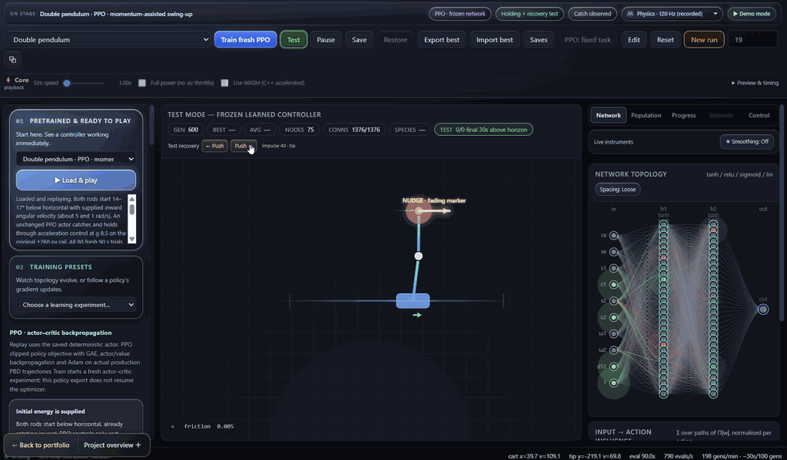
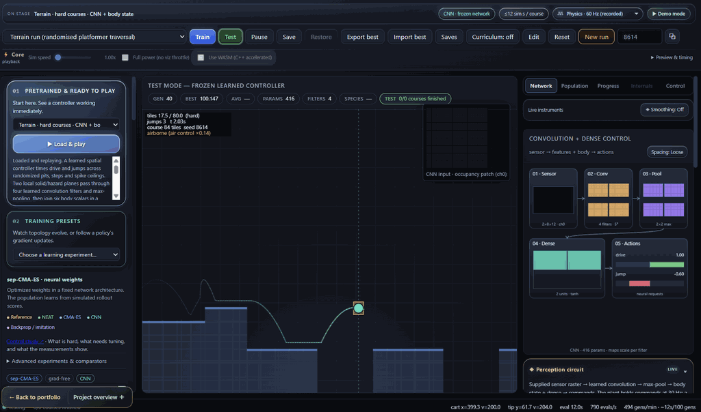
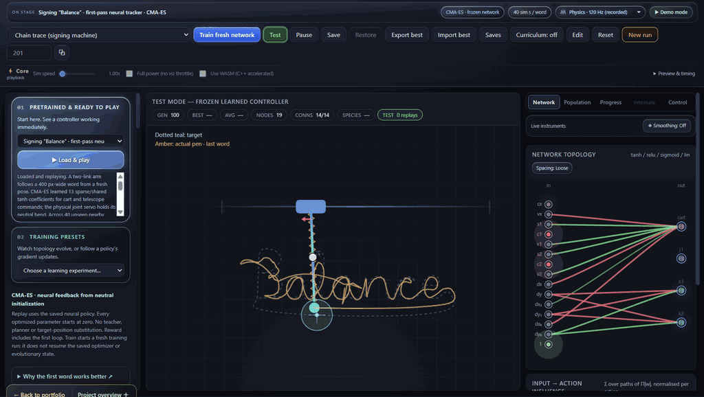
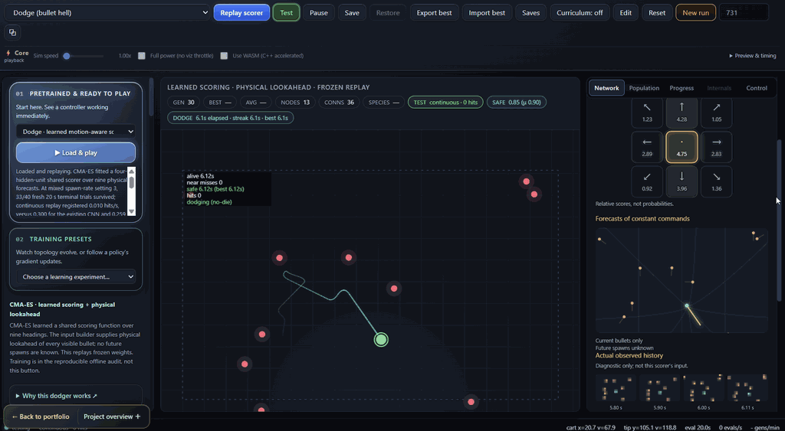

Interactive application Experimental
Interactive Video
Overview · selected highlights
BalanceForge
See learning happen inside a physical task. BalanceForge exposes the loop from observations to network activity, actions and training updates, with balancing, dodging, writing and putting giving those internal signals a visible consequence.
TrainBalanceRecover
- θ
Set a physical goal
Choose the mechanics, observations, actions and reward for a task you can watch.
- ↔
Follow the policy
Connect sensor inputs, network activations and action outputs to the resulting motion.
- ↗
Watch learning change it
Inspect NEAT topology, CMA-ES search or PPO training signals; explore the differentiable-simulation route.
- ↺
Try it and inspect
Disturb a saved controller, replay its behavior and compare it with analytical references.
A familiar physical task makes the inner workings of learning visible.



